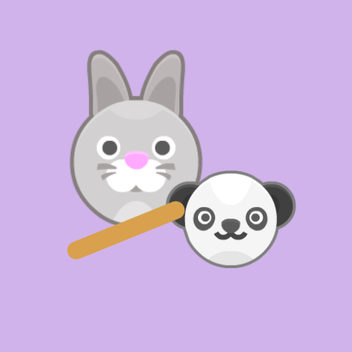

<- all projects

Yut Party
PC
Volume
Live
Four friends. One bright festival.
Rabbit, Panda, Owl and Bear have lost the lanterns for tonight's festival. Help them find their way home together in a friendly, forward-only take on yutnori, the Korean stick-throwing race game. Toss four sticks, move a piece or a whole stack, stack up on teammates, send opponents back to the start and take diagonal shortcuts from the corners and the center. The festival tour has four story chapters and 24 team events that light each neighborhood's lanterns, plus 32 route puzzles and a daily route, for one to four players against computer teams or each other.